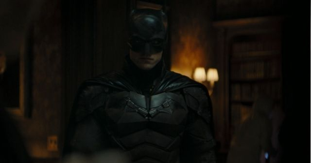

Cinema Ação
- Em Cartaz
- Em Breve
- Trailers
- Curiosidades
Doutor Estranho no Multiverso da Loucura Teaser Final.
O novo teaser de Doutor Estranho no Multiverso da Loucura promete que o filme vai "mudar para sempre" as coisas no mundo do MCU - e, pelas cenas compiladas na prévia, parece que a promessa será cumprida.
Batman 2 está confirmado!
Batman, estrelado por Robert Pattinson, é um dos principais lançamentos no cinema em 2022 e, depois de seu sucesso, uma continuação foi confirmada pela Warner Bros. em seu painel na CinemaCon 2022. Matt Reeves retorna na direção, enquanto Robert Pattinson será novamente o popular herói da DC.
Apesar da sequência não ter sido confirmada oficialmente até a CinemaCon, Matt Reeves já havia confirmado seus planos para a nova adaptação de Batman, com os filmes se conectando com duas novas séries derivadas e desenvolvidas para a HBO Bax, uma focada em Asilo Arkham e no Departamento de Polícia da Cidade de Gotham, e a outra focada no vilão ao Pinguim, interpretado por Colin Farrell.